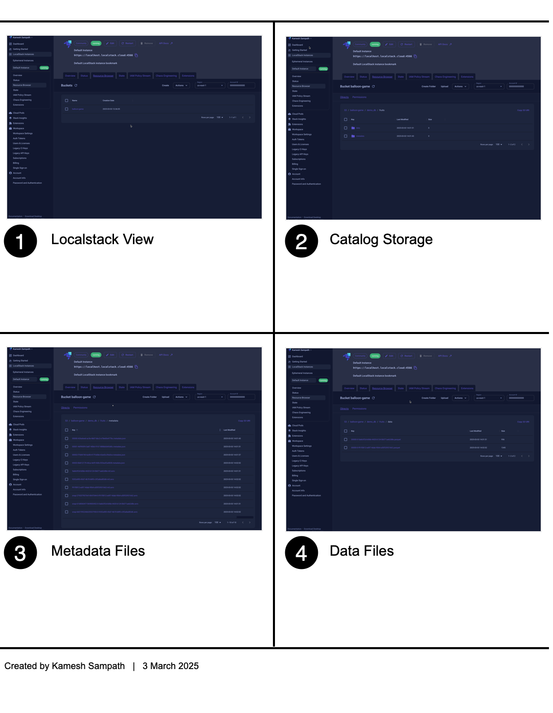

Setup Iceberg Catalog using Apache Polaris¶
Learning Objectives¶
By the end of this chapter, you will have:
- Created an S3 bucket for Iceberg data storage
- Configured a Polaris Catalog named
balloon-game - Set up the
super_userPrincipal with theadminPrincipal Role - Created the Catalog Role
sudoand assigned it to the Principal Roleadmin - Granted the
CATALOG_MANAGE_CONTENTpermission to thesudorole - Created the Iceberg database
balloon_popsfor our application
Info
The Polaris server starts with no catalogs configured. We'll set up the first catalog along with the necessary security roles and permissions.
Understanding Polaris Components¶
Before we begin, let's clarify the key components we'll be setting up:
- Catalog: A top-level container that manages Iceberg tables and their metadata
- Principal: A user identity that can access the catalog
- Principal Role: A collection of permissions assigned to principals
- Catalog Role: A role specific to a catalog that defines what actions can be performed
- Grants: Permissions assigned to roles
Creating the Catalog Infrastructure¶
Run the following command to create the entire catalog infrastructure:
Note
All configuration values can be customized by modifying the defaults file.
What Happens During Setup¶
The playbook performs these key operations:
- Creates an S3 bucket named
balloon-gamefor storing Iceberg data - Configures the Polaris catalog with the same name
- Sets up the
super_userprincipal for administration - Creates the
adminprincipal role and assigns it tosuper_user - Creates the
sudocatalog role with elevated permissions - Grants the
CATALOG_MANAGE_CONTENTpermission to thesudorole - Creates the
balloon_popsdatabase for our application data
Warning
The playbook temporarily modifies your environment variables for AWS connectivity:
These settings ensure proper connection to the LocalStack environment.Verifying the Setup¶
To confirm that everything is working correctly:
-
Run the verification notebook:
-
The notebook will create a test namespace, table, and insert sample data.
-
You can also verify the S3 bucket contents by opening the LocalStack web interface at https://app.localstack.cloud/inst/default/resources/s3/balloon-game?prefix=demo_db.
You should see something similar to this:

Next Steps
Now that you have set up the Polaris catalog infrastructure, you're ready to create the schema definitions for your Iceberg tables in the next chapter.